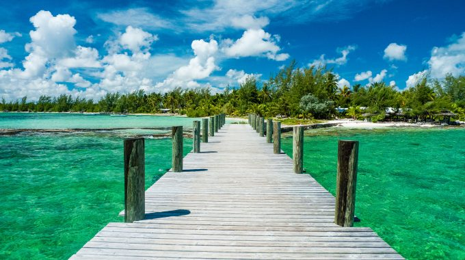

As if a beach like this needed any enhancement, pink-hued sand ups the ante in the picture-postcard stakes at Source d’Argent, a secluded cove
on La Digue, the Seychelles’ third-largest island . Huge, weathered granite boulders bookend the shore, and there are nearby restaurants
for sampling Creole-inspired cuisine.This beach is Europe’s tallest dune at over 100 metres. It’s an hour’s drive from Bordeaux and is
literally dazzling. You will shield your eyes as much from the shimmeringheat haze as the pristine sand. After you’ve taken in the panoramic views
over the Atlantic and pine forests behind, there are miles of beaches to explore along the Bassin d’Arcachon. Take a ferry from Arcachon pier to Cap
Ferret for the best view of the dune. To eat, head to the oyster cabanes,where fishermen set up tables and serve oysters, prawns, paté, bread and rosé wine.
